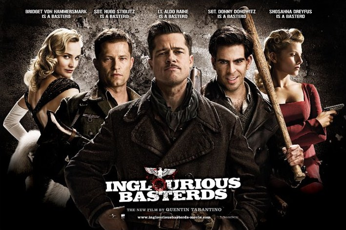

II Guerra Mundial, Francia, Shosanna presencia la ejecución de su familia por orden del coronel nazi Hans Landa. Huye a Paris y adopta una nueva identidad como propietaria de un cine. Mientras el teniente Aldo Raine adiestra a un grupo de soldados judíos. Los hombres de Raine y una actriz alemana que agente doble, deben llevar a cabo una misión que hará caer a los jefes del Tercer Reich. El destino quiere que todos se encuentren bajo la marquesina de un cine donde Shosanna espera para vengarse. La película obtuvo 8 nominaciones a los Óscar y, a pesar de su éxito, el único ganador fue Cristoph Waltz como Mejor Actor de Reparto. Se trata de la película de mayor recaudación del director.
Reparto
-
Brad Pitt como el teniente Aldo Raine "El Apache", un oficial originario de Tennessee quien forma un equipo de ocho soldados estadounidenses judíos. El personaje ha sido descrito como «un criminal influenciable y de espíritu libre» similar a Jules Winnfield, de Pulp Fiction.
-
Christoph Waltz como el coronel Hans Landa, el Cazajudíos, un asesino de judíos que mata a la familia de Shosanna.
-
Mélanie Laurent como Shosanna Dreyfus / Emmanuelle Mimieux, una joven francesa judía a quien los nazis dejaron huérfana al matar a toda su familia y a la vez que el general Fenech, también trama un plan para asesinar a todos los líderes nazis.
-
Michael Fassbender como Archie Hicox, teniente del ejército británico.
-
Diane Kruger como Bridget Von Hammersmark, actriz alemana de la época, y agente al servicio de los Aliados.
-
Daniel Brühl como Frederick Zoller, un cabo y héroe de guerra alemán que se siente fuertemente atraído a Shosanna.
-
Julie Dreyfus como Francesca Mondino, asistente personal y traductora de Joseph Goebbels.
Samuel L. Jackson como el narrador.